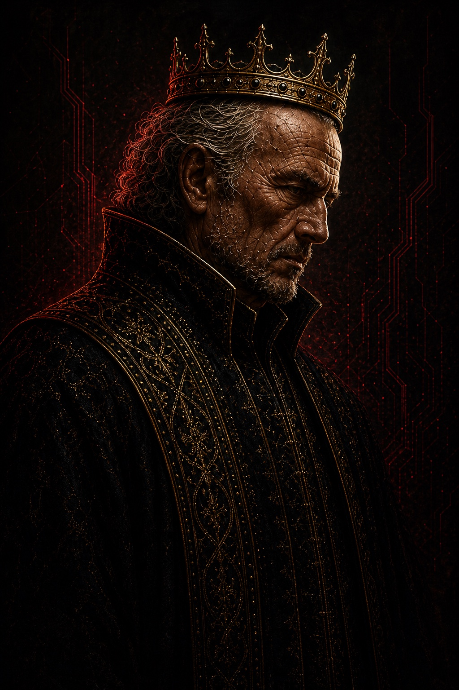

● Canonical visual v1
Samuel Franklin
False King · hidden decision-maker
Late sixties to early seventies. Receding gray waves, short rough beard, deeply weathered features, narrow crown, and a black ceremonial silhouette threaded with stolen gold.
- Primary field
- Crimson, fracture, controlled darkness
- Reject drift
- Younger face, long beard, armor, friendly softness